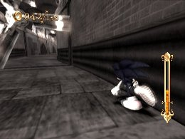

スピードブレイク、タイムブレイクの性質理解
基礎編
イビルファウンドリーの1ｓｔミッションをクリアすると使用出来る、「スピードブレイク」と「タイムブレイク」。
ステージ上に落ちているパールを拾うことで、ゲージが溜まっていき、一定量溜まる事で、「スピードブレイク」または「タイムブレイク」が使用可能になります。
ソウルゲージの色がオレンジ色に変わったら使用可能ですが、「スピードブレイク」「タイムブレイク」中は徐々にゲージを消費するので、溜めたゲージの量によって持続時間が違ってきます。
「スピードブレイク」「タイムブレイク」中にパールを獲得することでも持続時間を延ばすことが出来るので、最大までゲージを溜め、「スピードブレイク」中または「タイムブレイク」中にパールを獲得することが各ブレイクをたくさん続けられるコツになります。
また、最大ソウルゲージ量はレベルアップする事で増えていきます。
次に各ブレイクの性質について説明をします。
「スピードブレイク」
文字通り、速さを追求したブレイクで、一部の障害物を除き、マジンや障害物を撃破して突き進む事が出来ます。
「サンドオアシス」や「ダイナソージャングル」など、平坦な場所や破壊できる障害物が多い場面で効果が期待出来ます。
少しでもタイムを縮めたい時や避ける事が難しい障害物をやり過ごしたい時にも効果があります。
ただし、「スピードブレイク」中は左右の制御がほとんど出来ないので、使用するときは予め移動するラインを決めておく必要があります。

スピードブレイクで破壊できるものとできないものを覚えましょう
「タイムブレイク」
時間を制御するブレイクで、まわりの時間をゆっくりにする事が出来ます。
場所を問わず、様々な場面で効果が期待でき、なかでも高速で回転する鉄球やファンを通り抜けるのに使用すると便利です。

急に現れる敵や障害物などにも使え、「危ない」と感じたらすぐに使用して回避する事も出来ます。
他にもマップに隠された、見えないファイヤーソウルを発見出来る効果もありますので、積極的に使っていきたいところです。
ただし、「タイムブレイク」中は通常時よりも操作が難しく、操作に慣れが必要になってきますが、「サージ」系スキルを装備する事で、ソニックの操作が格段にプレイしやすくなるので、「タイムブレイク」を中心に使用する場合は装備しておきたいスキルです。
« グラインド活用法 | 基礎編 | リザルトの説明 »
 RSS
RSS